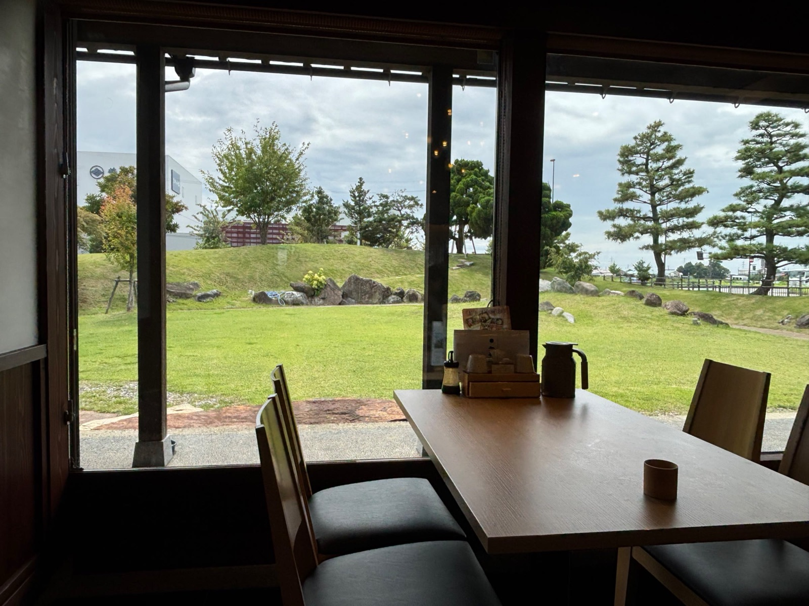
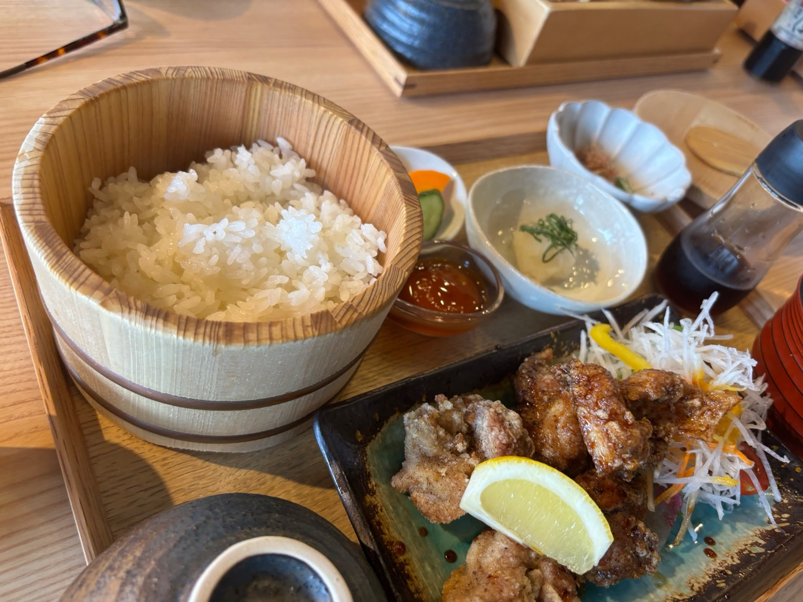
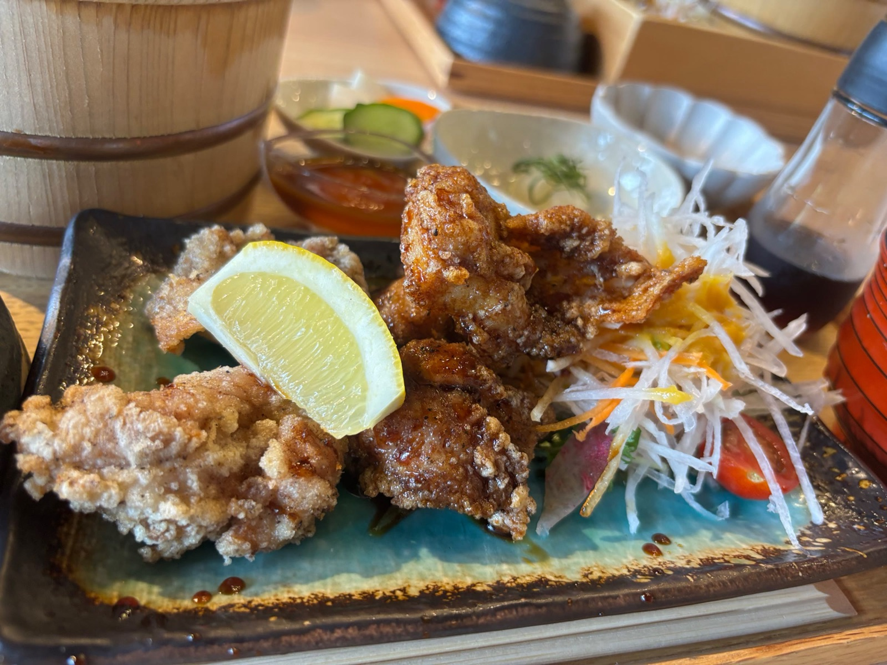
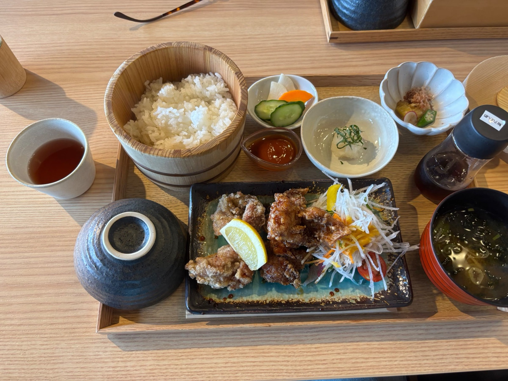
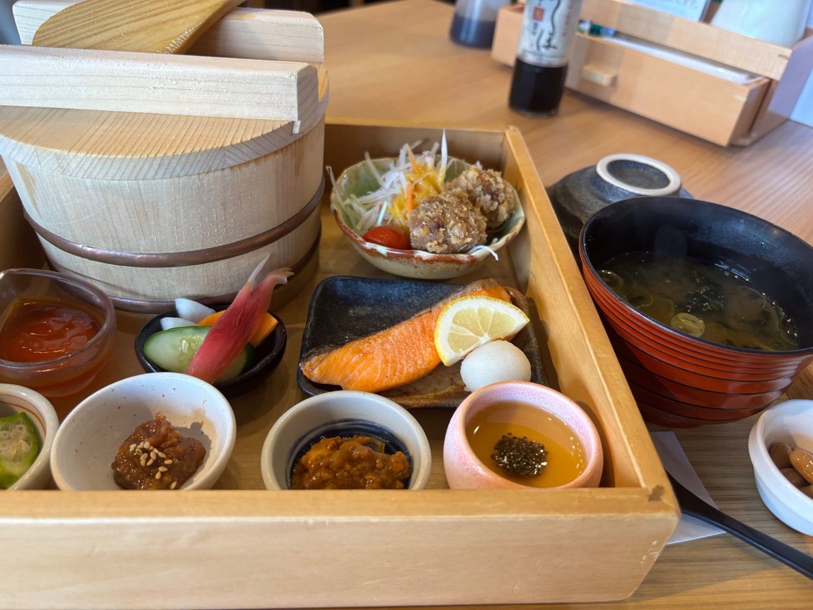
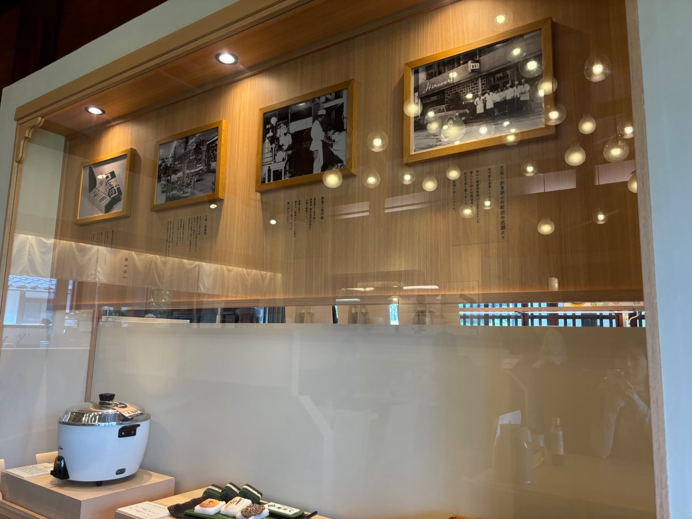

古民家の趣と、緑を望む窓辺で。
金沢の押し寿し文化を受け継ぐ「芝寿し」が手がける、古民家風の趣あるレストラン。大きな窓の向こうに広がる緑を眺めながら、旬の食材を活かした御膳をゆっくりと味わえます。店内には作りたてのお弁当も並び、食事とお土産の両方を楽しめるのも魅力です。





| 名前 | 芝寿しのさと |
|---|---|
| 場所 | 〒920-0378 石川県金沢市いなほ2-5 |
| 電話 | 076-240-4822 |
| 営業時間 | 平日9:00〜17:00／土日祝8:30〜17:00 ランチタイム 11:00〜14:30（L.O.13:30） |
| SNS | Instagram「SHIBA.SATO」 |